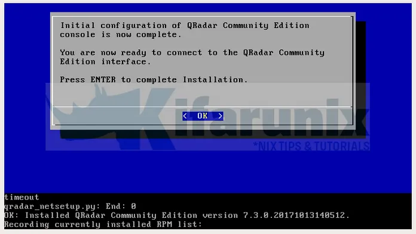
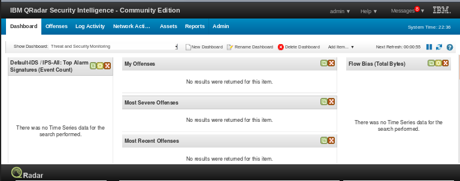

Installing Qradar
How to Install IBM QRadar Community Edition SIEM on VirtualBox
In this tutorial, we are going to learn how to install IBM QRadar Community Edition SIEM on VirtualBox.
IBM QRadar CE is a fully-featured and free version of QRadar that is low memory, low EPS intended for individual use like testing and familiarizing oneself with functionalities of IBM QRadar SIEM. To install QRadar CE on VirtualBox, ensure that the following prerequisites are met.
Prerequisites
- Download QRdar CE iso fromhere. Note that you need to create an IBM Account before you can download the iso.
- Install CentOS 7.3 minimal on VirtualBox with the following requirements;
- at least 4GB of RAM
- minimum of 80GB disk space
- Minimum of 2 CPU cores
- At least one Network Interface
The newer version of Qradar CE, v7.3.1, has been released. You can check how to install in our other guide by following the link below;
Install IBM QRadar Community Edition SIEM on VirtualBox
Once you have your CentOS 7.3 minimal installed;
- Copy the downloaded iso to CentOS server
- Login to your server and Update and Upgrade it yum update -y && yum -y upgrade
- Disable SELinux permanently and reboot the system sed -i 's/=enforcing/=disabled/g' /etc/selinux/config && systemctl reboot
- Disables IPv6 permanently. echo "net.ipv6.conf.all.disable_ipv6 = 1" >> /etc/sysctl.conf
- Create /media/cdrom directory for mounting the QRadar CE iso mkdir /media/cdrom
- Launch QRadar CE installation. /media/cdrom/setup
- Once the installation process starts, accept the EULA and proceed with installation.
Mount the QRadarCE7_3_0.GA.iso file.
mount -o loop /path/to/QRadarCE7_3_0.GA.iso /media/cdromInstallation will take some time to complete. So please be patient.
In the course of installation, the installation wizard will prompt you for some installation options. Choose the appropriate options based on your installation.
If everything goes as expected, you should see “Initial Configuration of Qradar Community Edition console is now complete…” simply means installation was successful.
Login as admin with the password you supplied during the installation. After login, you are prompted to reset your password. Reset your password and proceed to QRadar Dashboard.
Now that your QRadar is ready, you can configure your devices to sent logs and traffic to QRadar for analysis.
That is all it take to Install IBM QRadar Community Edition SIEM on VirtualBox. If for some reason QRadar installation fails due to gluster 3.8 repos failure; “One of the configured repositories failed (CentOS-7 – Gluster 3.8) and yum doesn’t have enough cached data to continue”, check how to fix it here.